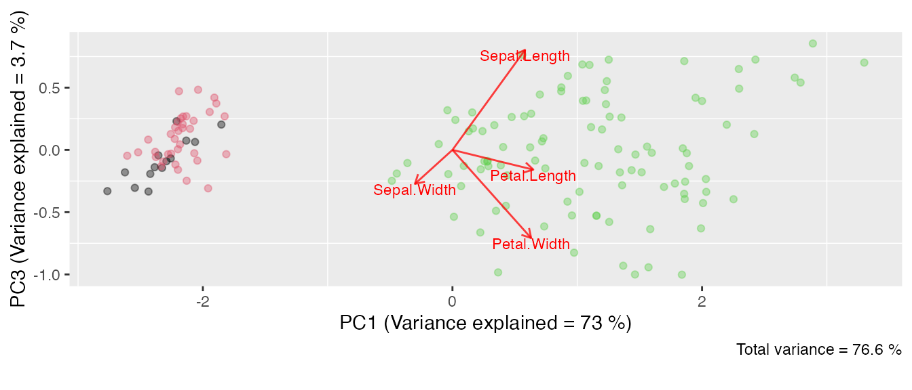

kmed: Distance-Based K-Medoids
Weksi Budiaji
2022-12-14
kmedoid.RmdAbstract
The kmed vignette consists of four sequantial parts of distance-based (k-medoids) cluster analysis. The first part is defining the distance. It has numerical, binary, categorical, and mixed distances. The next part is applying a clustering algorithm in the pre-defined distance. There are five k-medoids presented, namely the simple and fast k-medoids, k-medoids, ranked k-medoids, increasing number of clusters in k-medoids, and simple k-medoids. After the clustering result is obtained, a validation step is required. The cluster validation applies internal and relative criteria. The last part is visualizing the cluster result in a biplot or marked barplot.
1. Introduction
The kmed package is designed to analyse k-medoids based clustering. The features include:
- distance computation:
- numerical variables:
- binary or categorical variables:
- mixed variables:
- k-medoids algorithms:
- cluster validations:
- Cluster visualizations:
2. Distance Computation
2.A. Numerical variables (distNumeric)
The distNumeric function can be applied to calculate
numerical distances. There are four distance options, namely Manhattan
weighted by range (mrw), squared Euclidean weighted by
range (ser), squared Euclidean weighted by squared range
(ser.2), squared Euclidean weighted by variance
(sev), and unweighted squared Euclidean (se).
The distNumeric function provides method in
which the desired distance method can be selected. The default
method is mrw.
The distance computation in a numerical variable data set is
performed in the iris data set. An example of manual calculation of the
numerical distances is applied for the first and second objects only to
introduce what the distNumeric function does.
library(kmed)
iris[1:3,]## Sepal.Length Sepal.Width Petal.Length Petal.Width Species
## 1 5.1 3.5 1.4 0.2 setosa
## 2 4.9 3.0 1.4 0.2 setosa
## 3 4.7 3.2 1.3 0.2 setosa2.A.1. Manhattan weighted by range
(method = "mrw")
By applying the distNumeric function with
method = "mrw", the distance among objects in the iris data
set can be obtained.
num <- as.matrix(iris[,1:4])
rownames(num) <- rownames(iris)
#calculate the Manhattan weighted by range distance of all iris objects
mrwdist <- distNumeric(num, num)
#show the distance among objects 1 to 3
mrwdist[1:3,1:3]## 1 2 3
## 1 0.0000000 0.2638889 0.2530603
## 2 0.2638889 0.0000000 0.1558380
## 3 0.2530603 0.1558380 0.0000000The Manhattan weighted by range distance between objects 1 and 2 is
0.2638889. To calculate this distance, the range of each
variable is computed.
## Sepal.Length Sepal.Width Petal.Length Petal.Width
## 3.6 2.4 5.9 2.4Then, the distance between objects 1 and 2 is
#the distance between objects 1 and 2
abs(5.1-4.9)/3.6 + abs(3.5 - 3.0)/2.4 + abs(1.4-1.4)/5.9 + abs(0.2-0.2)/2.4## [1] 0.2638889which is based on the data
## Sepal.Length Sepal.Width Petal.Length Petal.Width
## 1 5.1 3.5 1.4 0.2
## 2 4.9 3.0 1.4 0.22.A.2. squared Euclidean weighted by range
(method = "ser")
#calculate the squared Euclidean weighthed by range distance of all iris objects
serdist <- distNumeric(num, num, method = "ser")
#show the distance among objects 1 to 3
serdist[1:3,1:3]## 1 2 3
## 1 0.00000000 0.11527778 0.08363936
## 2 0.11527778 0.00000000 0.02947269
## 3 0.08363936 0.02947269 0.00000000The squared Euclidean weighted by range distance between objects 1
and 2 is 0.11527778. It is obtained by
#the distance between objects 1 and 2
(5.1-4.9)^2/3.6 + (3.5 - 3.0)^2/2.4 + (1.4-1.4)^2/5.9 + (0.2-0.2)^2/2.4## [1] 0.11527782.A.3. squared Euclidean weighted by squared range
(method = "ser.2")
#calculate the squared Euclidean weighthed by squared range distance of
#all iris objects
ser.2dist <- distNumeric(num, num, method = "ser.2")
#show the distance among objects 1 to 3
ser.2dist[1:3,1:3]## 1 2 3
## 1 0.00000000 0.04648920 0.02825795
## 2 0.04648920 0.00000000 0.01031814
## 3 0.02825795 0.01031814 0.00000000The squared Euclidean weighted by squared range distance between
objects 1 and 2 is 0.04648920 that is computed by
(5.1-4.9)^2/3.6^2 + (3.5 - 3.0)^2/2.4^2 + (1.4-1.4)^2/5.9^2 + (0.2-0.2)^2/2.4^2## [1] 0.0464892where the data are
## Sepal.Length Sepal.Width Petal.Length Petal.Width
## 1 5.1 3.5 1.4 0.2
## 2 4.9 3.0 1.4 0.22.A.4. squared Euclidean weighted by variance
(method = "sev")
#calculate the squared Euclidean weighthed by variance distance of
#all iris objects
sevdist <- distNumeric(num, num, method = "sev")
#show the distance among objects 1 to 3
sevdist[1:3,1:3]## 1 2 3
## 1 0.0000000 1.3742671 0.7102849
## 2 1.3742671 0.0000000 0.2720932
## 3 0.7102849 0.2720932 0.0000000The squared Euclidean weighted by variance distance between objects 1
and 2 is 1.3742671. To compute this distance, the variance
of each variable is calculated.
## Sepal.Length Sepal.Width Petal.Length Petal.Width
## 0.6856935 0.1899794 3.1162779 0.5810063Then, the distance between objects 1 and 2 is
(5.1-4.9)^2/0.6856935 + (3.5 - 3.0)^2/0.1899794 + (1.4-1.4)^2/3.1162779 +
(0.2-0.2)^2/0.5810063## [1] 1.3742672.A.5. squared Euclidean (method = "se")
#calculate the squared Euclidean distance of all iris objects
sedist <- distNumeric(num, num, method = "se")
#show the distance among objects 1 to 3
sedist[1:3,1:3]## 1 2 3
## 1 0.00 0.29 0.26
## 2 0.29 0.00 0.09
## 3 0.26 0.09 0.00The squared Euclidean distance between objects 1 and 2 is
0.29. It is computed by
(5.1-4.9)^2 + (3.5 - 3.0)^2 + (1.4-1.4)^2 + (0.2-0.2)^2## [1] 0.292.B. Binary or Categorical variables
There are two functions to calculate the binary and categorical
variables. The first is matching to compute the simple
matching distance and the second is cooccur to calculate
the co-occurrence distance. To introduce what these functions do, the
bin data set is generated.
set.seed(1)
bin <- matrix(sample(1:2, 4*2, replace = TRUE), 4, 2)
rownames(bin) <- 1:nrow(bin)
colnames(bin) <- c("x", "y")2.B.1. Simple matching (matching)
The matching function calculates the simple matching
distance between two data sets. If the two data sets are identical, the
functions calculates the distance among objects within the data set. The
simple matching distance is equal to the proportion of the mis-match
categories.
bin## x y
## 1 1 2
## 2 2 1
## 3 1 1
## 4 1 1
#calculate simple matching distance
matching(bin, bin)## 1 2 3 4
## 1 0.0 1.0 0.5 0.5
## 2 1.0 0.0 0.5 0.5
## 3 0.5 0.5 0.0 0.0
## 4 0.5 0.5 0.0 0.0As an example of the simple matching distance, the distance between objects 1 and 2 is calculated by
((1 == 1) + (1 == 2))/ 2## [1] 0.5The distance between objects 1 and 2, which is 0.5, is
produced from one mis-match and one match categories
from the two variables (x and y) in the
bin data set. When x1 is equal to
x2, for instance, the score is 0. Meanwile, if
x1 is not equal to x2, the score is 1. These
scores are also valid in the y variable. Hence, the
distance between objects 1 and 2 is (0+1)/2 that is equal
to 1/2.
2.B.2. Co-occurrence distance (cooccur)
The co-ocurrence distance (Ahmad and Dey 2007;
Harikumar and PV 2015) can be calculated via the
cooccur function. To calculate the distance between
objects, the distribution of the variables are taken into consideration.
Compared to the simple matching distance, the co-occurrence distance
redefines the score of match and
mis-match categories such that they are
unnecessary to be 0 and 1,
respectively. Due to relying on the distribution of all inclusion
variables, the co-occurence distance of a data set with a single
variable is absent.
The co-occurrence distance of the bin data set is
#calculate co-occurrence distance
cooccur(bin)## 1 2 3 4
## 1 0.0000000 0.6666667 0.3333333 0.3333333
## 2 0.6666667 0.0000000 0.3333333 0.3333333
## 3 0.3333333 0.3333333 0.0000000 0.0000000
## 4 0.3333333 0.3333333 0.0000000 0.0000000To show how co-occurrence distance is calculated, the distance between objects 1 and 2 is presented.
bin## x y
## 1 1 2
## 2 2 1
## 3 1 1
## 4 1 1Step 1 Creating cross tabulations
#cross tabulation to define score in the y variable
(tab.y <- table(bin[,'x'], bin[,'y']))##
## 1 2
## 1 2 1
## 2 1 0
#cross tabulation to define score in the x variable
(tab.x <- table(bin[,'y'], bin[,'x']))##
## 1 2
## 1 2 1
## 2 1 0Step 2 Calculating the column proportions of each cross tabulation
##
## 1 2
## 1 0.6666667 1
## 2 0.3333333 0##
## 1 2
## 1 0.6666667 1
## 2 0.3333333 0Step 3 Finding the maximum values for each row of the proportion
## 1 2
## 0.6666667 1.0000000## 1 2
## 0.6666667 1.0000000Step 4 Defining the scores of each variable
The score is obtained by a summation of the maximum value subtracted
and divided by a constant. The constant has a value depending on the
number of inclusion variables. For the bin data set, the
constant is 1 because both x and
y variables are only depended on one other
variable, i.e. x depends on the distribution of
y and y relies on the distribution of
x.
#score mis-match in the y variable
(sum(max.y) - 1)/1## [1] 0.6666667
#score mis-match in the x variable
(sum(max.x) - 1)/1## [1] 0.6666667It can be implied that the score for mis-match categories are
0.5 and 0.67 in the x and
y variables, respectively. Note that the score for
match categories is alwalys
0. Thus, the distance between objects 1 and 2 is
0+0.6666667 = 0.6666667 and between objects 1 and 3 is
0.5+0.6666667 = 1.1666667
2.C. Mixed variables (distmix)
There are six available distance methods for a mixed variable data
set. The distmix function calculates mixed variable
distance in which it requires column id of each class of
variables. The mixdata data set is generated to describe
each method in the distmix function.
cat <- matrix(c(1, 3, 2, 1, 3, 1, 2, 2), 4, 2)
mixdata <- cbind(iris[c(1:2, 51:52),3:4], bin, cat)
rownames(mixdata) <- 1:nrow(mixdata)
colnames(mixdata) <- c(paste(c("num"), 1:2, sep = ""),
paste(c("bin"), 1:2, sep = ""),
paste(c("cat"), 1:2, sep = ""))2.C.1 Gower (method = "gower")
The method = "gower" in the distmix
function calculates the Gower (1971)
distance. The original Gower distance allows missing values, while it is
not allowed in the distmix function.
mixdata## num1 num2 bin1 bin2 cat1 cat2
## 1 1.4 0.2 1 2 1 3
## 2 1.4 0.2 2 1 3 1
## 3 4.7 1.4 1 1 2 2
## 4 4.5 1.5 1 1 1 2The Gower distance of the mixdata data set is
#calculate the Gower distance
distmix(mixdata, method = "gower", idnum = 1:2, idbin = 3:4, idcat = 5:6)## 1 2 3 4
## 1 0.0000000 0.6666667 0.8205128 0.6565657
## 2 0.6666667 0.0000000 0.8205128 0.8232323
## 3 0.8205128 0.8205128 0.0000000 0.1895882
## 4 0.6565657 0.8232323 0.1895882 0.0000000As an example, the distance between objects 3 and 4 is presented. The range of each numerical variables is necessary.
## num1 num2
## 3.3 1.3The Gower distance calculates the Gower similarity first. In the Gower similarity, the mis-match categories in the binary/ categorical variables are scored 0 and the match categories are 1. Meanwhile, in the numerical variables, 1 is subtracted by a ratio between the absolute difference and its range. Then, the Gower similarity can be weighted by the number of variables. Thus, the Gower similarity between objects 3 and 4 is
## [1] 0.8104118The Gower distance is obtained by subtracting 1 with the Gower similarity. The distance between objects 3 and 4 is then
#the Gower distance
1 - gowsim## [1] 0.18958822.C.2 Wishart (method = "wishart")
The Wishart (2003) distance can be
calculated via method = "wishart". Although it allows
missing values, it is again illegitimate in the distmix
function. The Wishart distance for the mixdata is
#calculate the Wishart distance
distmix(mixdata, method = "wishart", idnum = 1:2, idbin = 3:4, idcat = 5:6)## 1 2 3 4
## 1 0.0000000 0.8164966 1.2206686 1.1578998
## 2 0.8164966 0.0000000 1.2206686 1.2277616
## 3 1.2206686 1.2206686 0.0000000 0.4144946
## 4 1.1578998 1.2277616 0.4144946 0.0000000To calculate the Wishart distance, the variance of each numerical variable is required. It weighs the squared difference of a numerical variable.
## num1 num2
## 3.4200 0.5225Meanwhile, the mis-match categories in the binary/ categorical variables are scored 1 and the match categories are 0. Then, all score of the variables is added and squared rooted. Thus, the distance between objects 3 and 4 is
wish <- (((4.7-4.5)^2/3.42) + ((1.4-1.5)^2/0.5225) + 0 + 0 + 1 + 0)/ 6
#the Wishart distance
sqrt(wish)## [1] 0.41449462.C.3 Podani (method = "podani")
The method = "podani" in the distmix
function calculates the Podani (1999)
distance. Similar to The Gower and Wishart distances, it allows missing
values, yet it is not allowed in the distmix function. The
Podani distance for the mixdata is
#calculate Podani distance
distmix(mixdata, method = "podani", idnum = 1:2, idbin = 3:4, idcat = 5:6)## 1 2 3 4
## 1 0.000000 2.000000 2.202742 1.970396
## 2 2.000000 0.000000 2.202742 2.209629
## 3 2.202742 2.202742 0.000000 1.004784
## 4 1.970396 2.209629 1.004784 0.000000The Podani and Wishart distances are similar. They are different in the denumerator for the numerical variables. Instead of a variance, the Podani distance applies the squared range for a numerical variable. Unlike the Gower and Podani distances, the number of variables as a weight is absent in the Podani distance. Hence, the distance between objects 3 and 4 is
poda <- ((4.7-4.5)^2/3.3^2) + ((1.4-1.5)^2/1.3^2) + 0 + 0 + 1 + 0
#the Podani distance
sqrt(poda)## [1] 1.004784which is based on data
## num1 num2 bin1 bin2 cat1 cat2
## 3 4.7 1.4 1 1 2 2
## 4 4.5 1.5 1 1 1 22.C.4 Huang (method = "huang")
The method = "huang" in the distmix
function calculates the Huang (1997)
distance. The Huang distance of the mixdata data set is
#calculate the Huang distance
distmix(mixdata, method = "huang", idnum = 1:2, idbin = 3:4, idcat = 5:6)## 1 2 3 4
## 1 0.000000 5.144332 16.188249 13.872166
## 2 5.144332 0.000000 16.188249 15.158249
## 3 16.188249 16.188249 0.000000 1.336083
## 4 13.872166 15.158249 1.336083 0.000000The average standard deviation of the numerical variables is required to calculate the Huang distance. This measure weighs the binary/ categorical variables.
#find the average standard deviation of the numerical variables
mean(apply(mixdata[,1:2], 2, function(x) sd(x)))## [1] 1.286083While the squared difference of the numerical variables is calculated, the mis-match categories are scored 1 and the match categories are 0 in the binary/ categorical variables. Thus, the distance between objects 3 and 4 is
(4.7-4.5)^2 + (1.4-1.5)^2 + 1.286083*(0 + 0) + 1.286083*(1 + 0)## [1] 1.3360832.C.5 Harikumar and PV (method = "harikumar")
The Harikumar and PV (2015) distance
can be calculated via method = "harikumar". The Harikumar
and PV distance for the mixdata is
#calculate Harikumar-PV distance
distmix(mixdata, method = "harikumar", idnum = 1:2, idbin = 3:4, idcat = 5:6)## 1 2 3 4
## 1 0.0 4.0 6.5 5.9
## 2 4.0 0.0 7.5 7.4
## 3 6.5 7.5 0.0 0.8
## 4 5.9 7.4 0.8 0.0The Harikumar and PV distance requires an absolute difference in the numerical variables and unweighted simple matching, i.e. Hamming distance, in the binary variables. For the categorical variables, it applies co-occurrence distance. The co-occurence distance in the categorical variables is (for manual calculation see co-occurrence subsection)
cooccur(mixdata[,5:6])## 1 2 3 4
## 1 0.0 2 1.0 0.5
## 2 2.0 0 2.0 2.0
## 3 1.0 2 0.0 0.5
## 4 0.5 2 0.5 0.0Hence, the distance between objects 1 and 3 is
## [1] 0.8where the data are
## num1 num2 bin1 bin2 cat1 cat2
## 3 4.7 1.4 1 1 2 2
## 4 4.5 1.5 1 1 1 22.C.6 Ahmad and Dey (method = "ahmad")
The method = "ahmad" in the distmix
function calculates the Ahmad and Dey
(2007) distance. The Ahmad and Dey distance of the
mixdata data set is
#calculate Ahmad-Dey distance
distmix(mixdata, method = "ahmad", idnum = 1:2, idbin = 3:4, idcat = 5:6)## 1 2 3 4
## 1 0.00000 1.074383e+01 1.458000e+01 1.266111e+01
## 2 10.74383 2.191280e-32 1.678679e+01 1.648827e+01
## 3 14.58000 1.678679e+01 2.191280e-32 1.611111e-01
## 4 12.66111 1.648827e+01 1.611111e-01 2.191280e-32The Ahmad and dey distance requires a squared difference in the
numerical variables and co-occurrence distance for both the binary and
categorical variables. The co-occurrence distance in the
mixdata data set is
cooccur(mixdata[,3:6])## 1 2 3 4
## 1 0.000000 3.277778e+00 1.500000e+00 1.166667e+00
## 2 3.277778 -1.480297e-16 2.111111e+00 2.277778e+00
## 3 1.500000 2.111111e+00 -1.480297e-16 3.333333e-01
## 4 1.166667 2.277778e+00 3.333333e-01 -1.480297e-16Thus, the distance between objects 2 and 3 is
(1.4-4.7)^2 + (0.2-1.4)^2 + (2)^2## [1] 16.33which is based on the data
## num1 num2 bin1 bin2 cat1 cat2
## 2 1.4 0.2 2 1 3 1
## 3 4.7 1.4 1 1 2 23. K-medoids algorithms
There are some k-medoids algorithms available in this package. They
are the simple and fast k-medoids (fastkmed), k-medoids,
ranked k-medoids (rankkmed), and increasing number of
clusters k-medoids (inckmed). All algorithms have a list of
results, namely the cluster membership, id medoids, and distance of all
objects to their medoid.
In this section, the algorithms are applied in the iris
data set by applying the mrw distance (see Manhattan weighted by range). The number of clusters in
this data set is 3.
3.A. Simple and fast k-medoids algorithm
(fastkmed)
The simple and fast k-medoid (SFKM) algorithm has been proposed by
Park and Jun (2009). The
fastkmed function runs this algorithm to cluster the
objects. The compulsory inputs are a distance matrix or distance object
and a number of clusters. Hence, the SFKM algorithm for the
iris data set is
#run the sfkm algorihtm on iris data set with mrw distance
(sfkm <- fastkmed(mrwdist, ncluster = 3, iterate = 50))## $cluster
## 1 2 3 4 5 6 7 8 9 10 11 12 13 14 15 16 17 18 19 20
## 1 1 1 1 1 1 1 1 1 1 1 1 1 1 1 1 1 1 1 1
## 21 22 23 24 25 26 27 28 29 30 31 32 33 34 35 36 37 38 39 40
## 1 1 1 1 1 1 1 1 1 1 1 1 1 1 1 1 1 1 1 1
## 41 42 43 44 45 46 47 48 49 50 51 52 53 54 55 56 57 58 59 60
## 1 1 1 1 1 1 1 1 1 1 3 3 3 2 3 2 3 2 2 2
## 61 62 63 64 65 66 67 68 69 70 71 72 73 74 75 76 77 78 79 80
## 2 2 2 2 2 3 2 2 2 2 3 2 2 2 2 3 3 3 2 2
## 81 82 83 84 85 86 87 88 89 90 91 92 93 94 95 96 97 98 99 100
## 2 2 2 2 2 2 3 2 2 2 2 2 2 2 2 2 2 2 2 2
## 101 102 103 104 105 106 107 108 109 110 111 112 113 114 115 116 117 118 119 120
## 3 3 3 3 3 3 2 3 3 3 3 3 3 3 3 3 3 3 3 2
## 121 122 123 124 125 126 127 128 129 130 131 132 133 134 135 136 137 138 139 140
## 3 3 3 3 3 3 3 3 3 3 3 3 3 3 2 3 3 3 3 3
## 141 142 143 144 145 146 147 148 149 150
## 3 3 3 3 3 3 3 3 3 3
##
## $medoid
## [1] 8 95 148
##
## $minimum_distance
## [1] 45.76718Then, a classification table can be obtained.
(sfkmtable <- table(sfkm$cluster, iris[,5]))##
## setosa versicolor virginica
## 1 50 0 0
## 2 0 39 3
## 3 0 11 47Applying the SFKM algorithm in iris data set with the
Manhattan weighted by range, the misclassification rate is
(3+11)/sum(sfkmtable)## [1] 0.093333333.B. K-medoids algorithm
Reynolds et al. (2006) has been
proposed a k-medoids (KM) algorithm. It is similar to the SFKM such that the fastkmed can be
applied. The difference is in the initial medoid selection where the KM
selects the initial medoid randomly. Thus, the KM algorithm for the
iris data set by setting the init is
## [1] 68 129 43
#run the km algorihtm on iris data set with mrw distance
(km <- fastkmed(mrwdist, ncluster = 3, iterate = 50, init = kminit))## $cluster
## 1 2 3 4 5 6 7 8 9 10 11 12 13 14 15 16 17 18 19 20
## 3 3 3 3 3 3 3 3 3 3 3 3 3 3 3 3 3 3 3 3
## 21 22 23 24 25 26 27 28 29 30 31 32 33 34 35 36 37 38 39 40
## 3 3 3 3 3 3 3 3 3 3 3 3 3 3 3 3 3 3 3 3
## 41 42 43 44 45 46 47 48 49 50 51 52 53 54 55 56 57 58 59 60
## 3 3 3 3 3 3 3 3 3 3 2 2 2 1 1 1 2 1 1 1
## 61 62 63 64 65 66 67 68 69 70 71 72 73 74 75 76 77 78 79 80
## 1 1 1 1 1 2 1 1 1 1 2 1 1 1 1 2 1 2 1 1
## 81 82 83 84 85 86 87 88 89 90 91 92 93 94 95 96 97 98 99 100
## 1 1 1 1 1 1 2 1 1 1 1 1 1 1 1 1 1 1 1 1
## 101 102 103 104 105 106 107 108 109 110 111 112 113 114 115 116 117 118 119 120
## 2 2 2 2 2 2 1 2 2 2 2 2 2 2 2 2 2 2 2 1
## 121 122 123 124 125 126 127 128 129 130 131 132 133 134 135 136 137 138 139 140
## 2 2 2 2 2 2 2 2 2 2 2 2 2 2 1 2 2 2 2 2
## 141 142 143 144 145 146 147 148 149 150
## 2 2 2 2 2 2 2 2 2 2
##
## $medoid
## [1] 100 148 8
##
## $minimum_distance
## [1] 48.8411The classification table of the KM algorithm is
(kmtable <- table(km$cluster, iris[,5]))##
## setosa versicolor virginica
## 1 0 41 3
## 2 0 9 47
## 3 50 0 0with the misclassification rate
(3+9)/sum(kmtable)## [1] 0.08Compared to the SFKM algorithm, which has
9.33% misclassification, the misclassification of the KM
algorithm is slightly better (8%).
3.C. Rank k-medoids algorithm (rankkmed)
A rank k-medoids (RKM) has been proposed by Zadegan, Mirzaie, and Sadoughi (2013). The
rankkmed function runs the RKM algorithm. The
m argument is introduced to calculate a hostility score.
The m indicates how many closest objects is selected. The
selected objects as initial medoids in the RKM is randomly assigned. The
RKM algorithm for the iris data set by setting
m = 10 is then
#run the rkm algorihtm on iris data set with mrw distance and m = 10
(rkm <- rankkmed(mrwdist, ncluster = 3, m = 10, iterate = 50))## $cluster
## 1 2 3 4 5 6 7 8 9 10 11 12 13 14 15 16 17 18 19 20
## 2 2 1 1 2 2 1 2 1 2 2 2 1 1 2 2 2 2 2 2
## 21 22 23 24 25 26 27 28 29 30 31 32 33 34 35 36 37 38 39 40
## 2 2 1 2 2 2 2 2 2 1 1 2 2 2 2 2 2 2 1 2
## 41 42 43 44 45 46 47 48 49 50 51 52 53 54 55 56 57 58 59 60
## 2 1 1 2 2 1 2 1 2 2 3 3 3 3 3 3 3 3 3 3
## 61 62 63 64 65 66 67 68 69 70 71 72 73 74 75 76 77 78 79 80
## 3 3 3 3 3 3 3 3 3 3 3 3 3 3 3 3 3 3 3 3
## 81 82 83 84 85 86 87 88 89 90 91 92 93 94 95 96 97 98 99 100
## 3 3 3 3 3 3 3 3 3 3 3 3 3 3 3 3 3 3 3 3
## 101 102 103 104 105 106 107 108 109 110 111 112 113 114 115 116 117 118 119 120
## 3 3 3 3 3 3 3 3 3 3 3 3 3 3 3 3 3 3 3 3
## 121 122 123 124 125 126 127 128 129 130 131 132 133 134 135 136 137 138 139 140
## 3 3 3 3 3 3 3 3 3 3 3 3 3 3 3 3 3 3 3 3
## 141 142 143 144 145 146 147 148 149 150
## 3 3 3 3 3 3 3 3 3 3
##
## $medoid
## [1] "3" "50" "55"
##
## $minimum_distance
## [1] 65.20221Then, a classification table is attained by
(rkmtable <- table(rkm$cluster, iris[,5]))##
## setosa versicolor virginica
## 1 14 0 0
## 2 36 0 0
## 3 0 50 50The misclassification proportion is
(3+3)/sum(rkmtable)## [1] 0.04With 4% misclassification rate, the RKM algorithm is the
best among the three previous algorithms.
3.D. Increasing number of clusters k-medoids algorithm
(inckmed)
Yu et al. (2018) has been proposed an
increasing number of clusters k-medoids (INCKM) algorithm. This
algorithm is implemented in the inckmed function. The
alpha argument indicates a stretch factor to select the
initial medoids. The SFKM, KM and
INCKM are similar algorithm with a different way to
select the initial medoids. The INCKM algorithm of the iris
data set with alpha = 1.1 is
#run the inckm algorihtm on iris data set with mrw distance and alpha = 1.2
(inckm <- inckmed(mrwdist, ncluster = 3, alpha = 1.1, iterate = 50))## $cluster
## 1 2 3 4 5 6 7 8 9 10 11 12 13 14 15 16 17 18 19 20
## 1 1 1 1 1 1 1 1 1 1 1 1 1 1 1 1 1 1 1 1
## 21 22 23 24 25 26 27 28 29 30 31 32 33 34 35 36 37 38 39 40
## 1 1 1 1 1 1 1 1 1 1 1 1 1 1 1 1 1 1 1 1
## 41 42 43 44 45 46 47 48 49 50 51 52 53 54 55 56 57 58 59 60
## 1 1 1 1 1 1 1 1 1 1 3 2 3 2 2 2 2 2 2 2
## 61 62 63 64 65 66 67 68 69 70 71 72 73 74 75 76 77 78 79 80
## 2 2 2 2 2 2 2 2 2 2 2 2 2 2 2 2 2 3 2 2
## 81 82 83 84 85 86 87 88 89 90 91 92 93 94 95 96 97 98 99 100
## 2 2 2 2 2 2 3 2 2 2 2 2 2 2 2 2 2 2 2 2
## 101 102 103 104 105 106 107 108 109 110 111 112 113 114 115 116 117 118 119 120
## 3 2 3 3 3 3 2 3 3 3 3 3 3 2 3 3 3 3 3 2
## 121 122 123 124 125 126 127 128 129 130 131 132 133 134 135 136 137 138 139 140
## 3 2 3 2 3 3 2 3 3 3 3 3 3 2 2 3 3 3 2 3
## 141 142 143 144 145 146 147 148 149 150
## 3 3 2 3 3 3 3 3 3 3
##
## $medoid
## [1] 8 56 113
##
## $minimum_distance
## [1] 45.44091Then, the classification table can be attained.
(inckmtable <- table(inckm$cluster, iris[,5]))##
## setosa versicolor virginica
## 1 50 0 0
## 2 0 46 11
## 3 0 4 39The misclassification rate is
(9+3)/sum(inckmtable)## [1] 0.08The algorithm has 8% misclassification rate such that
the RKM algorithm performs the best among the four
algorithms in the iris data set with the mrw
distance.
3.E. Simple k-medoids algorithm (skm)
The simple k-medoid (SKM) algorithm has been proposed by Budiaji and Leisch (2019). The skm
function runs this algorithm to cluster the objects. The compulsory
inputs are a distance matrix or distance object and a number of
clusters. Hence, the SKM algorithm for the iris data set
is
#run the sfkm algorihtm on iris data set with mrw distance
(simplekm <- skm(mrwdist, ncluster = 3, seeding = 50))## $cluster
## 1 2 3 4 5 6 7 8 9 10 11 12 13 14 15 16 17 18 19 20
## 1 1 1 1 1 1 1 1 1 1 1 1 1 1 1 1 1 1 1 1
## 21 22 23 24 25 26 27 28 29 30 31 32 33 34 35 36 37 38 39 40
## 1 1 1 1 1 1 1 1 1 1 1 1 1 1 1 1 1 1 1 1
## 41 42 43 44 45 46 47 48 49 50 51 52 53 54 55 56 57 58 59 60
## 1 1 1 1 1 1 1 1 1 1 2 3 2 3 3 3 3 3 3 3
## 61 62 63 64 65 66 67 68 69 70 71 72 73 74 75 76 77 78 79 80
## 3 3 3 3 3 3 3 3 3 3 3 3 3 3 3 3 3 2 3 3
## 81 82 83 84 85 86 87 88 89 90 91 92 93 94 95 96 97 98 99 100
## 3 3 3 3 3 3 2 3 3 3 3 3 3 3 3 3 3 3 3 3
## 101 102 103 104 105 106 107 108 109 110 111 112 113 114 115 116 117 118 119 120
## 2 3 2 2 2 2 3 2 2 2 2 2 2 3 2 2 2 2 2 3
## 121 122 123 124 125 126 127 128 129 130 131 132 133 134 135 136 137 138 139 140
## 2 3 2 3 2 2 3 2 2 2 2 2 2 3 3 2 2 2 3 2
## 141 142 143 144 145 146 147 148 149 150
## 2 2 3 2 2 2 2 2 2 2
##
## $medoid
## [1] 8 113 56
##
## $minimum_distance
## [1] 45.44091Then, a classification table can be obtained.
(simpletable <- table(simplekm$cluster, iris[,5]))##
## setosa versicolor virginica
## 1 50 0 0
## 2 0 4 39
## 3 0 46 11Applying the SKM algorithm in iris data set with the
Manhattan weighted by range, the misclassification rate is
(4+11)/sum(simpletable)## [1] 0.14. Cluster validation
The clustering algorithm result has to be validated. There are two types of validation implemented in the kmed package. They are internal and relative criteria validations.
4.A.1. Silhouette (sil)
Rousseeuw (1987) has proposed a
silhouette index as an internal measure of validation. It is based on
the average distance of objects within a cluster and between the nearest
cluster. The sil function calculates the silhouette index
of clustering result. The arguments are a distance matrix or distance
object, id medoids, and cluster membership. It produce a list of
silhouette indices and sihouette plots.
The silhouette index and plot of the best clustering result of
iris data set via RKM is presented.
#calculate silhouette of the RKM result of iris data set
siliris <- sil(mrwdist, rkm$medoid, rkm$cluster,
title = "Silhouette plot of Iris data set via RKM")The silhouette index of each object can be obtained by
#silhouette indices of objects 49 to 52
siliris$result[c(49:52),]## silhouette cluster
## 49 0.49986165 2
## 50 0.01977318 2
## 51 0.59663837 3
## 52 0.61488150 3Then, the plot is presented by
siliris$plot4.A.2. Centroid-based shadow value (csv)
An other way to measure internal validation with its corresponding
plot is by presenting the centroid-based shadow value (Leisch 2010). The csv function
calculates and plots the centroid-base shadow value of each object,
which is based on the first and second closest medoids. The centroid of
the original version of the csv is replaced by medoids in the
csv function to adapt the k-medoids algorithm.
The required arguments in the csv function is identical
to the silhouette (sil) function. Thus,
the shadow value and plot of the best clustering result of
iris data set via RKM can be obtained
by
#calculate centroid-base shadow value of the RKM result of iris data set
csviris <- csv(mrwdist, rkm$medoid, rkm$cluster,
title = "CSV plot of Iris data set via RKM")The centroid-based shadow values of objects 49 to 52, for instance, are presented by
#shadow values of objects 49 to 52
csviris$result[c(49:52),]## csv cluster
## 49 0.7899687 2
## 50 0.0000000 2
## 51 0.3604380 3
## 52 0.2473829 3The centroid-based shadow value plot is also produced.
csviris$plot4.A.3. Medoid-based shadow value (msv)
An other way to measure internal validation by combining silhoutte
and csv properties is by a medoid-based shadow value (msv) (Budiaji 2019). The msv function
calculates and plots the medoid-based shadow value of each object, which
is based on the first and second closest medoids.
The required arguments in the msv function is identical
to the centroid-based shadow value (csv)
function. Thus, the medoid-based shadow value and plot of the best
clustering result of iris data set via RKM can be obtained by
#calculate medoid-based shadow value of the RKM result of iris data set
msviris <- msv(mrwdist, rkm$medoid, rkm$cluster,
title = "MSV plot of Iris data set via RKM")The medoid-based shadow values of objects 49 to 52, for instance, are presented by
#Medoid-based shadow values of objects 49 to 52
msviris$result[c(49:52),]## msv cluster
## 49 0.3471503 2
## 50 1.0000000 2
## 51 0.7801620 3
## 52 0.8588494 3The shadow value plot is also produced.
msviris$plot4.B. Relative criteria
The relative criteria evaluate a clustering algorithm result by applying re-sampling strategy. Thus, a bootstrap strategy can be applied. It is expected that the result of the cluster bootstraping is robust over all replications (Dolnicar and Leisch 2010). There are three steps to validate the cluster result via the boostraping strategy.
Step 1 Creating a matrix of bootstrap replicates
To create a matrix of bootstrap replicates, the
clustboot function can be applied. There are five arguments
in the clustboot function with the algorithm
argument being the most important. The algorithm argument
is the argument for a clustering algorithm that a user wants to
evaluate. It has to be a function. When the RKM of iris data set is validated, for
instance, the RKM function, which is required as an input in the
algorithm argument, is
#The RKM function for an argument input
rkmfunc <- function(x, nclust) {
res <- rankkmed(x, nclust, m = 10, iterate = 50)
return(res$cluster)
}When a function is created, it has to have two input arguments. They
are x (a distance matrix) and nclust (a number
of clusters). The output, on the other hand, is a vector of
cluster membership (res$cluster). Thus, the matrix of
bootstrap replicates can be produced by
#The RKM algorthim evaluation by inputing the rkmfunc function
#in the algorithm argument
rkmbootstrap <- clustboot(mrwdist, nclust=3, nboot=50, algorithm = rkmfunc)with the objects 1 to 4 on the first to fifth replications being
rkmbootstrap[1:4,1:5]## [,1] [,2] [,3] [,4] [,5]
## [1,] 1 1 1 0 1
## [2,] 1 1 1 1 0
## [3,] 0 1 0 1 0
## [4,] 0 1 0 0 2The rkmbootstrap is a matrix of bootrstrap replicates
with a dimension of 150 x 50, i.e. n x b, where
n is the number of objects and b is the number of
bootstrap replicates. Note that the default evaluated
algorithm is the SFKM algorithm such that if a user
ignores the algorithm argument, the matrix of bootstrap
replicates can still be produced. However, it misleads because it does
not evaluate the user’s own algorithm.
Step 2 Transforming the bootstrap matrix into a consensus matrix
The matrix of bootstrap replicates produced by the
clustboot in the step 1 can be
transformed into a consensus matrix with a dimension of n x n
via the consensusmatrix function. An element of the
consensus matrix in row i dan column j is an agreement
value between objects i and j to be in the same
cluster when they are taken as a sample at the same time (Monti et al. 2003).
However, it requires an algorithm to order the objects in such a way
that objects in the same cluster are close to each other. The
consensusmatrix function has the reorder
argument to comply this task. It is similar to the
algorithm argument in the clustboot function
in the step 1 where the reorder has to
be a function that has two arguments and a vector of output.
Transforming the rkmbootstrap into a consensus matrix
via the ward linkage algorithm to oder the objects, for example, can
obtained by
#The ward function to order the objects in the consensus matrix
wardorder <- function(x, nclust) {
res <- hclust(as.dist(x), method = "ward.D2")
member <- cutree(res, nclust)
return(member)
}
consensusrkm <- consensusmatrix(rkmbootstrap, nclust = 3, wardorder)The first to fourth rows and columns can be displayed as
## 1 1 1 1
## 1 1.0000000 0.8823529 0.7333333 0.8421053
## 1 0.8823529 1.0000000 1.0000000 0.9444444
## 1 0.7333333 1.0000000 1.0000000 0.9473684
## 1 0.8421053 0.9444444 0.9473684 1.0000000Step 3 Visualizing the consensus matrix in a heatmap
The ordered consensus matrix in the step 2 can be
visualized in a heatmap applying the clustheatmap function.
The agreement indices in the consensus matrix can be transformed via a
non-linear transformation (Hahsler and Hornik
2011). Thus, the consensusrkm can visualize into
clustheatmap(consensusrkm, "Iris data evaluated by the RKM, ordered by Ward linkage")5. Cluster visualization
A cluster visualization of the clustering result can enhance the data structure understanding. The biplot and marked barplot are presented to visualize the clustering result.
A. Biplot
The pcabiplot function can be applied to plot a
clustering result from a numerical data set. The numerical data set has
to be converted into a principle component object via the
prcomp function. The x and y axes
in the plot can be replaced by any component of the principle
components. The colour of the objects can be adjusted based on the
cluster membership by supplying a vector of membership in the
colobj argument.
The iris data set can be plotted in a pca biplot with
the colour objects based on the RKM algorithm
result.
#convert the data set into principle component object
pcadat <- prcomp(iris[,1:4], scale. = TRUE)
#plot the pca with the corresponding RKM clustering result
pcabiplot(pcadat, colobj = rkm$cluster, o.size = 2)The second principle component can be replaced by the third principle component.
pcabiplot(pcadat, y = "PC3",colobj = rkm$cluster, o.size = 1.5)
B. Marked barplot
A marked barplot has been proposed by Dolnicar
and Leisch (2014); Leisch (2008)
where the mark indicates a significant difference between the cluster’s
mean and population’s mean in each variable. The barplot
function creates a barplot of each cluster with a particular significant
level. The layout of the barplot is set in the nc
argument.
The barplot of iris data set partitioned by the RKM algorithm is
barplotnum(iris[,1:4], rkm$cluster, alpha = 0.05)while the layout is changed into 2 columns and the alpha is set into 1%, it becomes
barplotnum(iris[,1:4], rkm$cluster, nc = 2, alpha = 0.01)